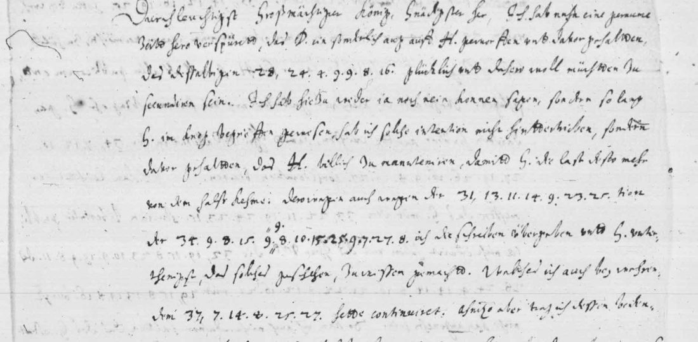

Cipher Letters › Copenhagen, Rigsarkivet › 1629
Wallenstein's Mecklenburg cannot please the king: Johan Zobel to Christian IV, 20 September 1629
A German report from the Danish resident in Paris with 19 words hidden in a number cipher: Stralsund, Wallenstein's investiture with Mecklenburg and Duke Frederick's bishoprics. Read in part, with the key recovered from the ciphertext alone.
- Letter
- Paris, 20 September 1629 (new style); two pages, images 241 and 242
- From / to
- Johan Zobel, Danish resident in Paris → Christian IV
- Held at
- Copenhagen, Rigsarkivet, TKUA Speciel del, Frankrig B.31 (Gesandtskabsrelationer fra Johan Zobel 1627-31), unit 261292, images 241-242; Arkivalieronline epid 19852643
- Cipher
- 19 cipher words in clear German; each starts with an index number 28-39 that picks one of four number alphabets; 134 letter figures
- Read
- 15 of 19 cipher words without emendation (78.9%); the other 4 each need one figure added, doubtful or supplied
- Record
- Cyphersolver, targets/zobel1629 (issue #456; catalogue entry 2540); maintainer's write-up: zobel1629

Decoded
What is new and what was known
No decipherment lies on or beside the leaves, and none was found in print. The contributor searched Fridericia (1876), Danske Magazin, Danske Samlinger, Historisk Tidsskrift, DECODE and Cryptiana and found nothing. Fridericia uses neighbouring letters of 16-19 September 1629, not this one. Danmark-Norges Traktater, Opel, Lindenfels and Franksen were not reached, so priority is not established.
The letter was found by Daniel Bourdeau's sweep of the Rigsarkivet TKUA series (catalogue entry 2540, 11 November 2026). What this work adds: a key recovered from the ciphertext alone, the 19 cipher words decoded, and a reading and English translation of the letter.
The letter
Johan Zobel, Danish resident in Paris, writes in German to Christian IV. Two pages: image 241 (right page, 21 lines) and image 242 (left page, 17 lines, with the signature). The pencil date at the foot of 241 is "1629 20/9".
Most of the letter is in clear German. Nineteen words are replaced by runs of numbers. Persons and states appear in the clear as single capital letters: D., H., G., B., Bp., Bo. G. is Christian IV from context. The contributor guesses D. for France, H. for Sweden and B. for the Emperor. unverified: not proved from this sheet
What Zobel writes
German as read; English from the contributor's translation in the repository. CAPITALS = the deciphered cipher words. Square brackets in a capitalised word mark a letter or figure supplied or emended. (?) marks a doubtful clear word.
Zobel has noticed that D. has an eye on H., whose arms are fortunate. While G. was at war he did not thwart this, and he handed over letters on Stralsund:
"Deswegen auch wegen der PROTEC-tion der STA[T] STRALSUNT ich die schreiben übergeben""For that reason too, concerning the PROTECTION of the TOWN OF STRALSUND, I handed over the letters"
Now he will do nothing without the king's express order. He thinks the king would do well to call ZOBEL home for a talk. Then he turns to Mecklenburg:
"das Ihrer Mt. die INVESTITUR des WALLENSTEINS mit MEKLEN-burg nicht kan angenehm sein""that the INVESTITURE of WALLENSTEIN with MECKLENBURG cannot be pleasing to His Majesty"
He does not think the king's state secure while Bp. and Bo. remain with B., and closes:
"und weis woll gute leute die ein blau auge daran wagten, HERZOG FRIDRICHEN in seine STIFTER wider zu in-ST[A]LL-iren""and I know good people who would risk a black eye to INSTAL DUKE FREDERICK in his BISHOPRICS again"
The cipher
Each cipher word is written as an index number and then a run of figures. The index, 28 to 39, picks one of four alphabets for 24 letters (i = j, u = v). The letters are the figures 4 to 27.
- 28-30: straight, a = 4 ... z = 27. Fixed by the rule.
- 31-33: reversed, a = 27 ... z = 4. Fixed by the rule.
- 34-36: rising from a = 15 with f and g changed over, falling from o = 12; z = 14. No value for c d i k p q w x y, which are not seen.
- 37-39: values for e g i k l n r only, from three words. The rest is open.
The key is partial: a letter not seen in a table has no value.
How it was read
- 11 Nov 2026. Catalogue sweep: images 241 and 242 viewed at full size; 19 words in number cipher, no decipherment on or beside the leaves.
- 12 Nov 2026. First transcription of the figures from the images, frozen before the scripted decode (by the contributor's record).
- Words seen while transcribing (WAFFEN, ZOBELN, WALLENSTEINS, FRIDRICHEN) gave the straight table. A test of all 48 straight and reversed alphabets gave the reversed table: a = 4 straight was the only one giving words for 28-30, reversed a = 27 the only one for 31-33. The third and fourth tables came from word fits. The key was found while reading, before the transcription was frozen (the contributor's own account).
- The values g = 20 and f = 21 in table 34-36 were fitted to figures a hypothesis wanted otherwise. The contributor declared this.
- A second reader (not fully blind) and a third, blind reader transcribed both pages again.
Checks
- Second and third transcriptions: the second reader matched 149 of 153 figures and decoded 14 of 19 words; the blind third reader matched 150 of 152 aligned figures and decoded 16 of 19 words with the key unchanged. These are the contributor's figures.
- Shuffled and random keys: German 4-gram score of the decode -2.9761; 0 of 5,000 shuffled keys (best -3.5974) and 0 of 5,000 random keys (best -3.5204) reach it.
- Integration check (12 Nov 2026): a decoder written in the repository from the four alphabet rules reproduced all 19 words and the 134-figure count. Both images were compared at full size: the 19 index figures and all letter figures agree with the word table. A German language model puts the decode first; 0 of 2,000 random letter relabellings reach it.
- Statistical validation: the repository's test gives "underdetermined": too few tokens per type (133 read tokens, 1.5 per type) to confirm or refute the key. The key rests on the rule-fixed tables and on words that read.
How much is read?
| Rule | Read | Share |
|---|---|---|
| README bar: a word is read only if every figure gives the letter it needs | 15 of 19 words | 78.9% |
| Contributor's harder count (also not counting words that hold a value fitted from a single word) | 11 of 19 words | 57.9% |
The four emended words are STA[T] (a 9 = s written above the line where the key wants 8 = t), KR[I]EG (third figure 4 or 8), EINGE[W]IL (an ink blot) and ST[A]LL (an a missing, third figure overwritten). Of 134 letter figures in the 19 words, 131 give a letter.
What remains uncertain
- Tables 34-36 and 37-39 have no values for letters not seen. Only 19 cipher words are known, so no more can be reached.
- The four emended words turn on single figures that are doubtful, blotted or overwritten on the images.
- The cover letters D., H., B., Bp. and Bo. are not solved. The clear letters of 16-19 September 1629 (images 231-240) may settle them.
- Three clear words after "ZOBEL hette bey wehrendem KRIEG dem G." are unread, and some clear words are marked (?). The clear text was read by the contributor from the scan and checked at integration only on lines 1-6 of image 241 and the cipher lines of image 242.
- The printed record (Danmark-Norges Traktater, Opel, Lindenfels, Franksen) and the archive's packet "Chiffer" (no. 112) were not reached.
Who did what
Malcolm McBratney (Brisbane) directed the work and set its rules, with Claude (Anthropic) sessions doing the transcriptions, finding the key and checking. He sent the result as GitHub issue #456 with two comments, holding the key, the word table, the reading, translation and counts. The files in the repository were laid out from the issue text at integration. Daniel Bourdeau found the letter in his Rigsarkivet sweep (catalogue entry 2540, 11 Nov 2026), and the result was integrated into Cyphersolver on 12 Nov 2026.
Sources
- Copenhagen, Rigsarkivet, TKUA Frankrig B.31, unit 261292: image 241 48879224, image 242 48879225.
- Cyphersolver, targets/zobel1629: key, transcription, decryption, reading, translation and checks.
- Cyphersolver write-up: zobel1629.
- GitHub issue #456.